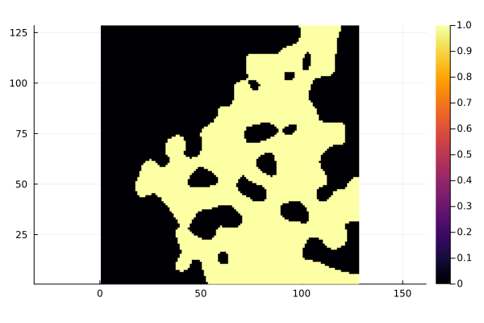

Theory
What is tortuosity
A voxel image is a 2D or 3D array of 0s and 1s, which denote solid and void respectively (see figure below).

The tortuosity factor is a geometric property of the medium. It is loosely defined as the extra length that molecules travel on average, by diffusion, between opposing faces such as $x=0$ and $x=\ell_x$, normalized by the direct length $\ell_x$. It is therefore direction-dependent, and can be computed along each of the main principal axes of the image.
With this definition, open space has a tortuosity factor of 1, while a maze has one equal to the length of the maze divided by the direct length.
Computing tortuosity
To compute $\tau$, solve the steady state heat equation, that is, the Laplace equation:
\[\nabla \cdot (D_b \nabla c) = 0\]
where $c$ is the concentration field and $D_b$ the bulk diffusivity. Solve it on a voxel image with Dirichlet boundary conditions imposed on opposing faces, for example $c(x=0) = c_i$ and $c(x=\ell_x) = c_o$. The tortuosity factor, $\tau$, is then defined as:
\[\tau = \frac{D_b}{D_{eff}} \varepsilon\]
where $\varepsilon$ is the porosity and $D_{eff}$ is the effective diffusivity, computed as:
\[D_{eff} = \frac{\dot{m} \cdot \ell_x}{\Delta c \cdot A}\]
where $\dot{m}$ is the mass flow rate, $\Delta c$ is the concentration difference, and $A$ is the cross-sectional area.
Tortuosity.jl carries out these steps for you; Steady-State Tortuosity walks through them on a generated image.